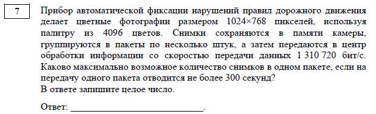
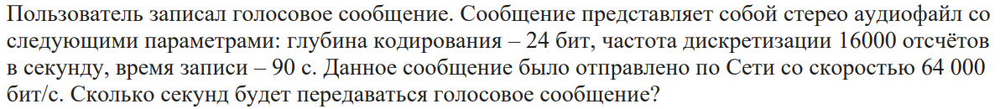

Для решения этого задания могут понадобится данные формулы:
I = n*i
Где:
n - количество символов
i - количество бит на 1 символ
I = v*T
Где:
I - объем информации
v - пропускная способность канала связи
T - время передачи
I = i*x*y
Где:
x,у - ширина и длина изобрадения
i - глубина кодирования цвета или разрешение
N = 2**i
Где:
N - количество символов, цветов и т.д.
k = I(n)/I
Где:
k - количество пакетов
Алгоритм решения:
1. Читаем задание и выделяем то, что нам дано и что надо найти.
2. Подбираем формулы, которые подойдут для решения задания.
3. Вычесляем и записываем ответ.
Пример из ДЕМО-2025:

1. Воспользуемся формулой I(пак) = v*T, чтобы найти объем пакета. v = 1310720 бит/с, T = 300 с. I = 1310720*300 = 393 216 000 бит
2. Затем найдем i, N = 2**i, где N = 4086 цветов, следовательно i = 12
3. Находим вес одного снимка в пакет I = i*x*y, где i = 12, x = 1024 px, y = 768 px. I = 12*1024*768 = 9 437 184 бит
4. Количество снимков k = I(пак)/I. k = 393 216 000/9 437 184=41.6666666666
5. Округдяем ответ в миньшую сторону, так как передача не может превышать 300 секунд.
6. Ответ: 41
Для лучшего усвоения материала можете решить данную задачу:
